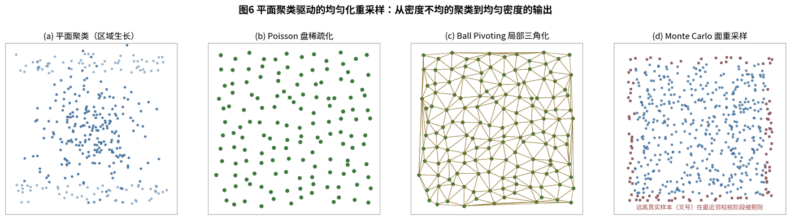
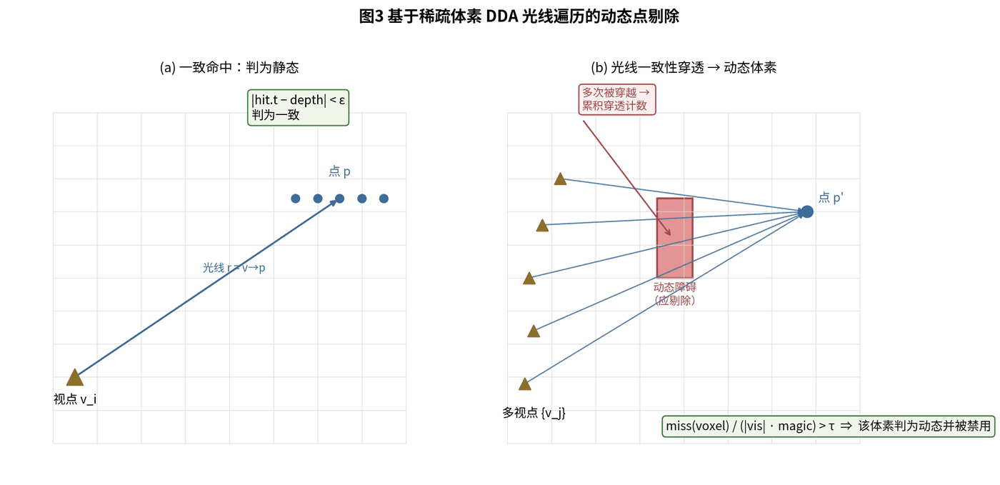
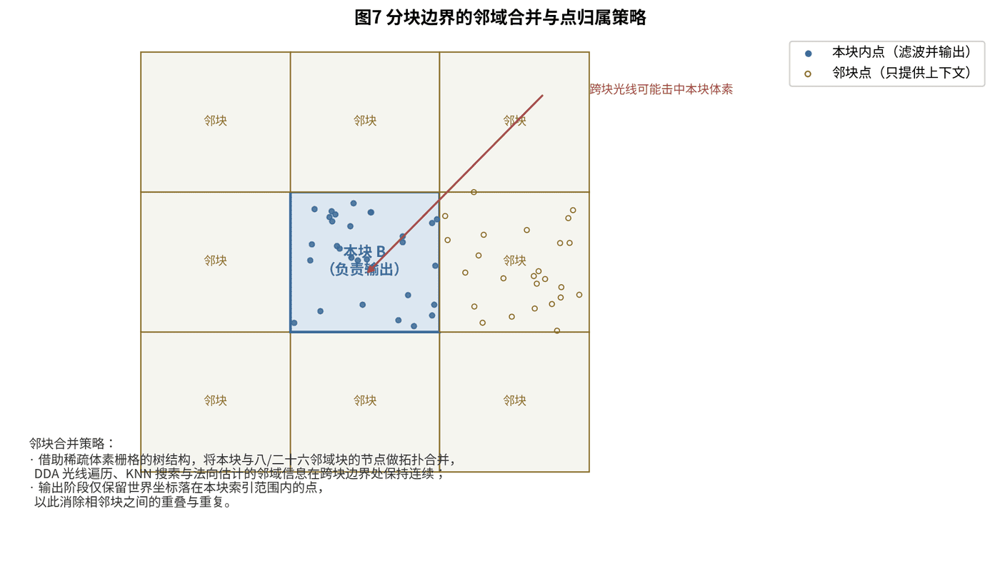

Block-parallel filtering and geometric refinement for handheld LiDAR scans.
Handheld LiDAR Point-Cloud Processing
A production point-cloud filtering pipeline for handheld laser scanning, using sparse voxel grids, keyframe trajectory priors, block-level parallelism, dynamic-object removal, robust normal orientation, bilateral geometric refinement, and density homogenization.
Background
Handheld laser scanners produce dense keyframe point clouds while moving through indoor and outdoor scenes. The raw data contains range noise, dynamic people or vehicles, uneven sampling density, self-occlusion around the scanner, reflective artifacts, and repeated surfaces caused by dense trajectory coverage.
For production reconstruction, the raw cloud must be filtered and refined before mesh reconstruction, colorization, or delivery. The pipeline also has to handle very large scenes under bounded memory, so the algorithm is organized around streaming spatial partitioning and block-level parallel processing.
Approach
- Use a sparse voxel grid as the shared spatial index for streaming block construction, neighbor topology, ray traversal, local neighborhoods, and final block ownership.
- Partition keyframe point clouds into non-overlapping spatial blocks, record up to 26 neighboring blocks, and prepare block tasks for parallel execution.
- Remove dynamic points by combining sparse-voxel visibility traversal with temporal consistency: a voxel crossed by rays from nearby timestamps may be glass, a porous object such as a wire mesh, or a voxel-boundary approximation, while repeated crossings across separated time intervals indicate that an object occupied different positions over time.
- Refine geometry with jet smoothing, robust viewpoint-driven normal orientation, normal-distance bilateral filtering, and minimum-spanning-tree normal propagation.
- Optionally homogenize large planar regions through clustering, Poisson-disk thinning, ball-pivoting local triangulation, Monte Carlo surface resampling, and nearest-sample validation.
- Finish with post-voxel regularization, sparse outlier cleanup, strict attribute validation, block-boundary ownership checks, and streaming global merge.
My Contribution
I designed and implemented the filtering and geometric refinement pipeline as a production post-processing system for handheld LiDAR reconstruction. The core design uses sparse voxel grids, keyframe trajectory priors, and temporal evidence to make visibility reasoning, local geometry refinement, density control, and block-parallel scalability work in one consistent coordinate system.
My main contributions included:
- Four-stage production pipeline: streaming block construction, task preparation, block-parallel filtering, and streaming result merge
- Dynamic-object removal that combines visibility traversal with keyframe time spans, separating true moving objects from glass, porous structures, and boundary artifacts caused by voxelized visibility approximation
- Robust normal estimation and orientation based on averaged viewpoint direction and global MST propagation
- Normal-distance anisotropic bilateral filtering that smooths surfaces while preserving sharp structural edges
- Plane-cluster-driven density homogenization for large floors, walls, and other broad planar structures
- Block-boundary ownership and neighbor-merge logic that avoids duplicate output and boundary discontinuities
Outcome
The completed pipeline converts raw handheld LiDAR keyframe clouds into clean, uncolored global point clouds suitable for downstream reconstruction, visualization, and colorization workflows. It covers distance filtering, time-aware dynamic removal, centroiding, smoothing, normal refinement, density regularization, outlier cleanup, boundary-safe block output, and global merge.
The system is structured for production deployment: serial streaming stages handle data preparation and final merge, while the core block-level filtering stage is stateless and naturally parallel across workers.



